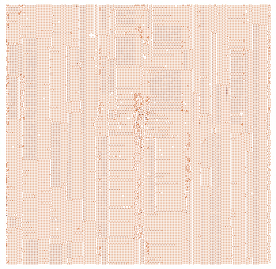

Read parameters
Read the input image
Read the calibration image
If the input image is binned than apply the same binning factor
to the calibrated image (the calibrated image is supposed to
be a full-frame high-resolution image)
Check that the filters for each file are identical- if not issue a warning.
Prepare the output image by crating an empty array having
the same sizes as the input image and copy the header parameters
from the input image to the output image
Remove point sources from the input image (by masking them)
If mode=1 (the main algorithm) then
Compute the background B1 inside of the ring-shaped region of the input image
Compute the background B2 inside of the same region of the calibrated image
Compute the scaling factor S as S=B1/B2
Subtract the scaled calibrated image from the input image:
OutputImage = InputImage - S * CalibratedImage + B1
If mode=2 then
Compute the background B1 inside of the peripheral ring-shaped region
of the input image
Compute the count level C1 inside of the ring-shaped region corresponding to
the central scattered light feature of the input image
Compute the background B2 of the peripheral region of the
calibrated image
Compute the count level C2 inside of the ring-shaped region corresponding to
the central scattered light feature of the calibrated image
Compute the scaling factor S as S=(C1-B1)/(C2-B2)
Subtract the scaled calibrated image from the input image:
OutputImage = InputImage - S * (CalibratedImage - B2)
If mode=3 then
Compute the background B2 of the peripheral region of the
calibrated image
In a loop changing the scaling factor from S=0.2 to 2.8 with spep 0.02:
Subtract the scaled calibrated image from the input image:
OutputImage = InputImage - S * (CalibratedImage - B2)
Compute the background B1 inside of the peripheral ring-shaped region
of the output image
Compute the count level C1 inside of the ring-shaped region corresponding to
the central scattered light feature of the output image
Compute the difference between the count levels of these two values:
D = abs(C1 - B1)
Chose the optimal value of the scaling factor S_opt correponding
to the minimum of D from the above loop
Subtract the scaled calibrated image from the input image using the
scaling factor S_opt:
OutputImage = InputImage - S_opt*(CalibratedImage - B2)
Write output image
The main algorithm (mode=1) is used as the default option for the task. An example of the output image obtained by applying the algorithm with mode=1 to the input image from Fig.1 is shown in Fig.5.
|  |